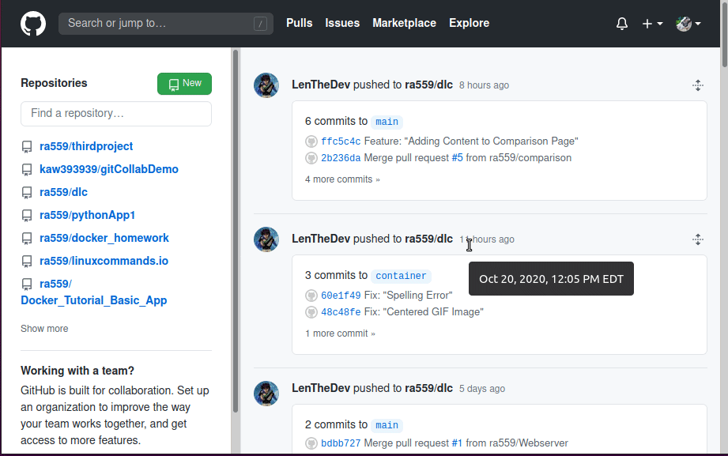
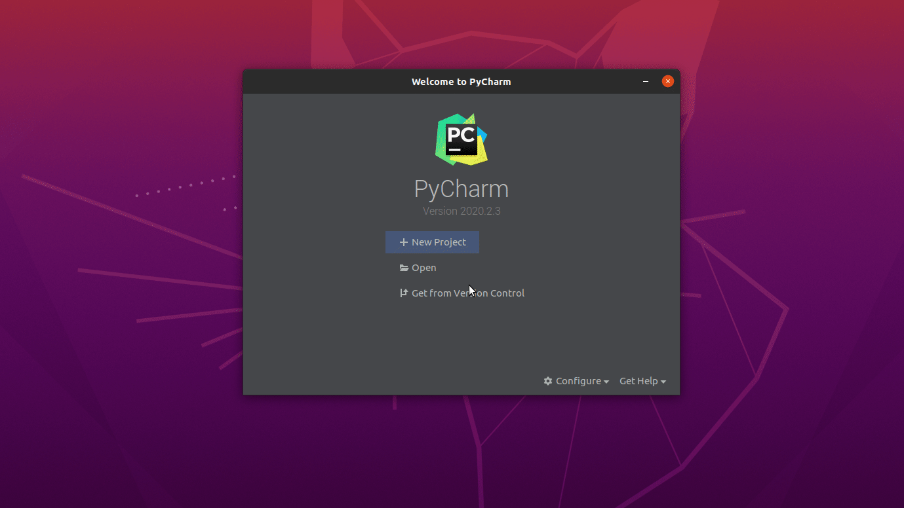
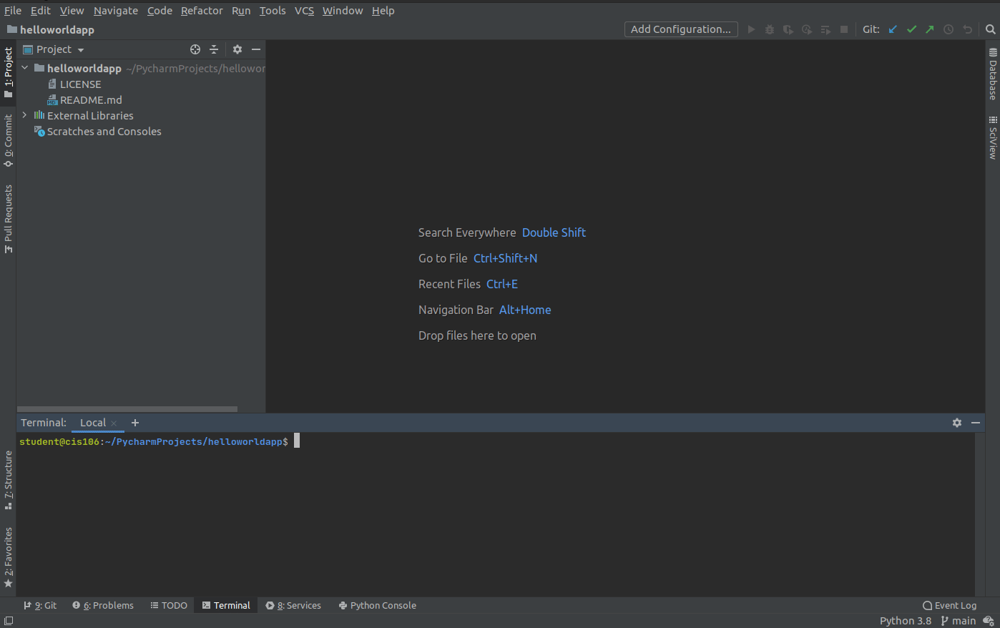
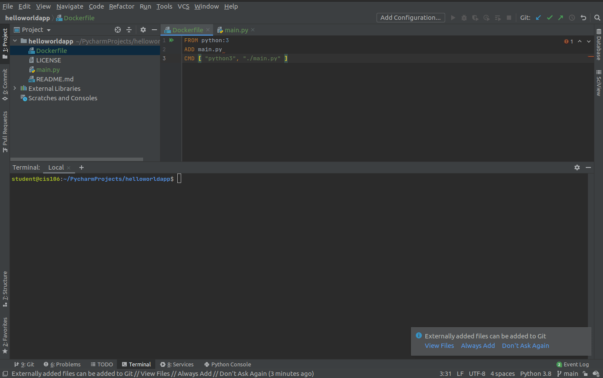
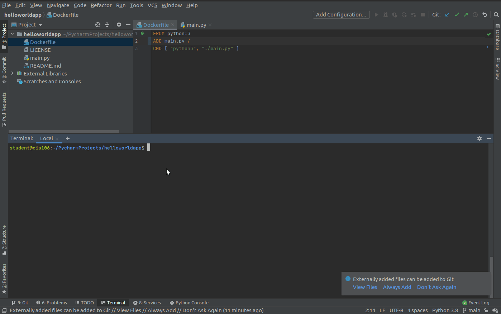

How to connect Docker and Pycharm to write python code.
Linux is a family of open-source Unix-like operating systems based on the Linux kernel, an operating
system kernel first released on September 17, 1991, by Linus Torvalds. Linux is typically packaged in
a Linux distribution. -Wikipedia
Step 1: Software installation
I am using Ubuntu 20.04. All the instructions in this tutorial
assume that the reader is using Ubuntu 20.04 or a Ubuntu distribution. The software that we need to install are:
- Git - sudo apt install git -y
- Docker - curl https://robertalberto.com/scripts/dockerinstaller.sh | bash
After installing docker, make sure to create a group for docker if one is not created. You will need
to add your user to the docker group. If you do not do this, only root will be able to use docker.
- To create a group use: sudo groupadd docker
- To add a user to the group use: sudo usermod -aG docker $USER
- Activate group ownership changes: newgrp docker
- Jetbrains toolbox
- Download the Jetbrains toolbox from here: Toolbox
- From your Home directory run the following commands:
tar zxf Downloads/jetbrains-toolbox-1.18.7455.tar.gz
cd jetbrains-toolbox-1.18.7455/
./jetbrains-toolbox
Once the Jetbrains toolbox appears, select PyCharm Professional since the community edition
does not support docker.
Step 2: Setup PyCharm
Now that all the software is installed. Start Pycharm and go complete
the initial configuration. You must sign in to your JetBrains Account.
Create a Git Repo
Before you can start coding, lets create a github repository.

Now lets connect Pycharm and Github so that we can get our repo from version control.

Now that we have github and Pycharm connected, lets enable docker. Got to file -> Pluggins -> search for docker
-> if it is not installed, install it. Now go to: File -> Build, Execution, Deployment -> Docker. Click on the + to
add docker. Click on Unix Socket and at the bottom it should say Docker connected. If you get an error
that says "docker daemon not running". Do the following
- Enable and restart the docker service: sudo systemctl enable docker; sudo systemctl restart docker
- Restart
- Try to connect docker again. It should say sucessfull

Write the code
Now that our development environment is ready. Lets start by creating adocker file and they python file for our
hello world app.
- Create two files: Dockerfile and main.py
- Open the Dockerfile and add the following text to it:
FROM python:3
ADD main.py
CMD [ "python3", "./main.py" ]
These instructions will create a docker container with python3 and will run main.py that will contain
our code.
- Create the file main.py and add the following lines:
print("This is a simple python App")
print("Hello world")
- Now lets commit these changes and push them to github so that we can save all our work.
git add .
git commit -m "Task: added dockerfile and main.py"
git push

Run the code in a docker container
To run this application in a docker container use the following commands:
- Build the docker container: docker build -t helloworld .
If you get this error message:
Error response from daemon: Dockerfile parse error line 2: ADD requires at least two arguments, but only one was provided. Destination could not be determined.
The solution is a missing backslash at the end of line 2
- Run the app with: docker run -t -i helloworld
